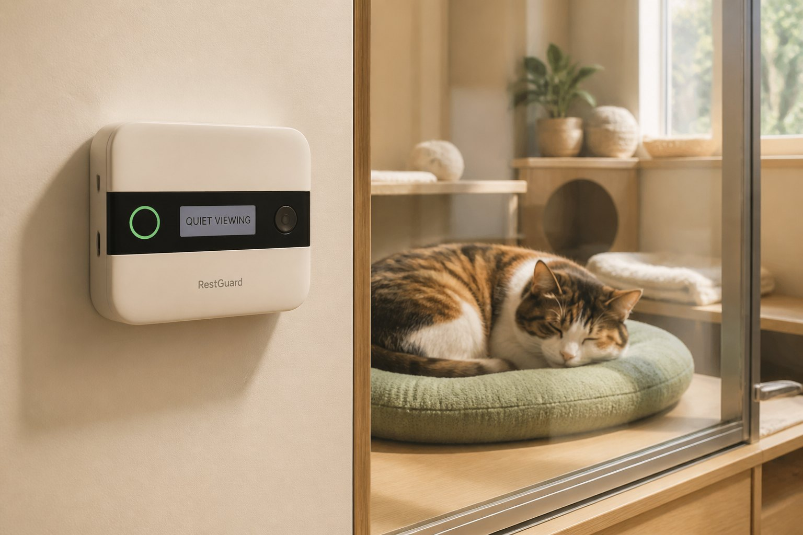
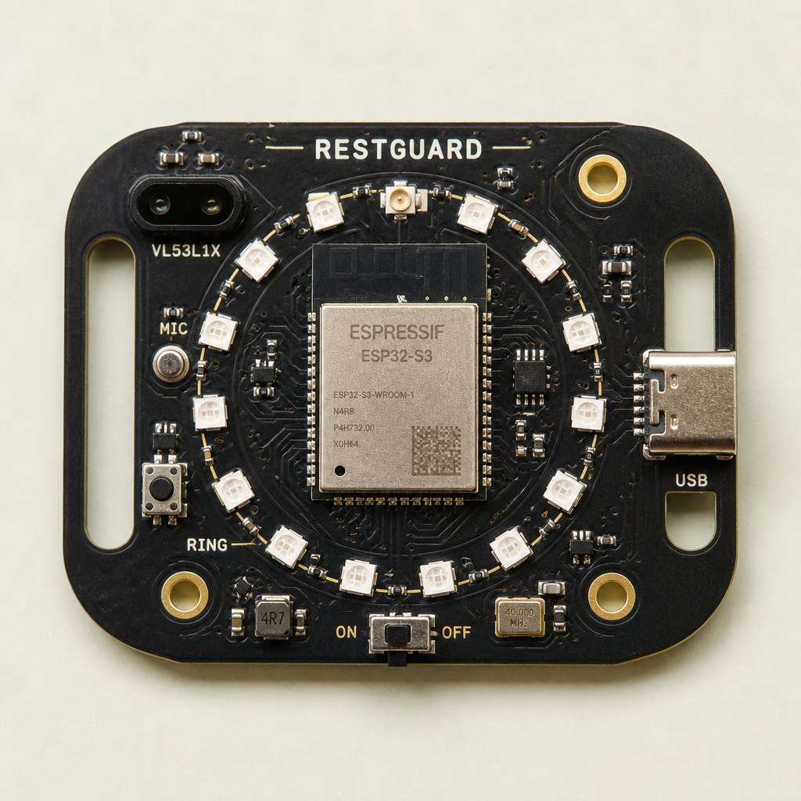
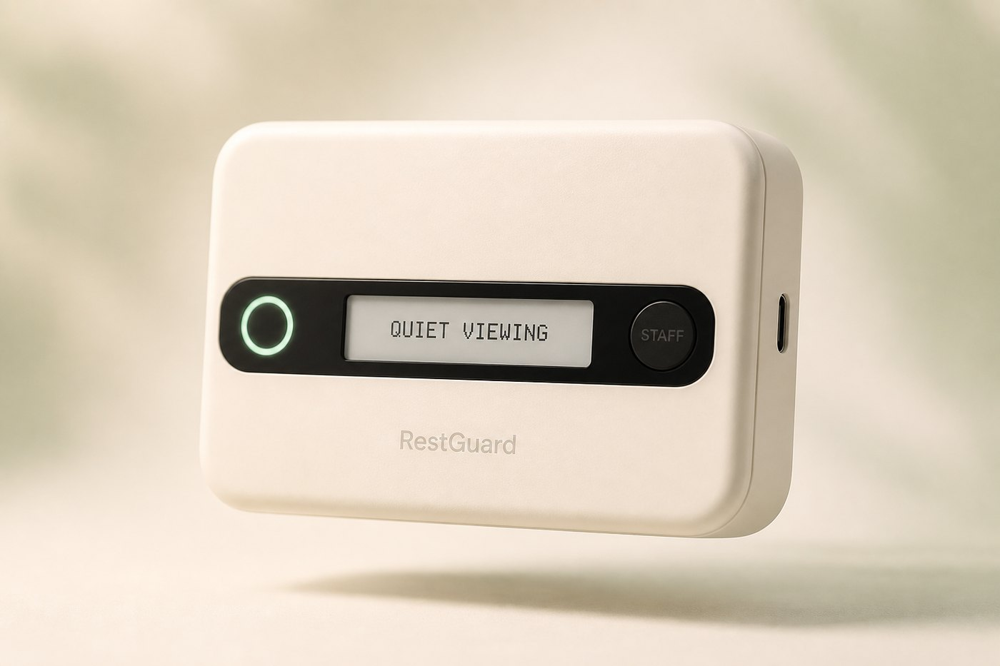
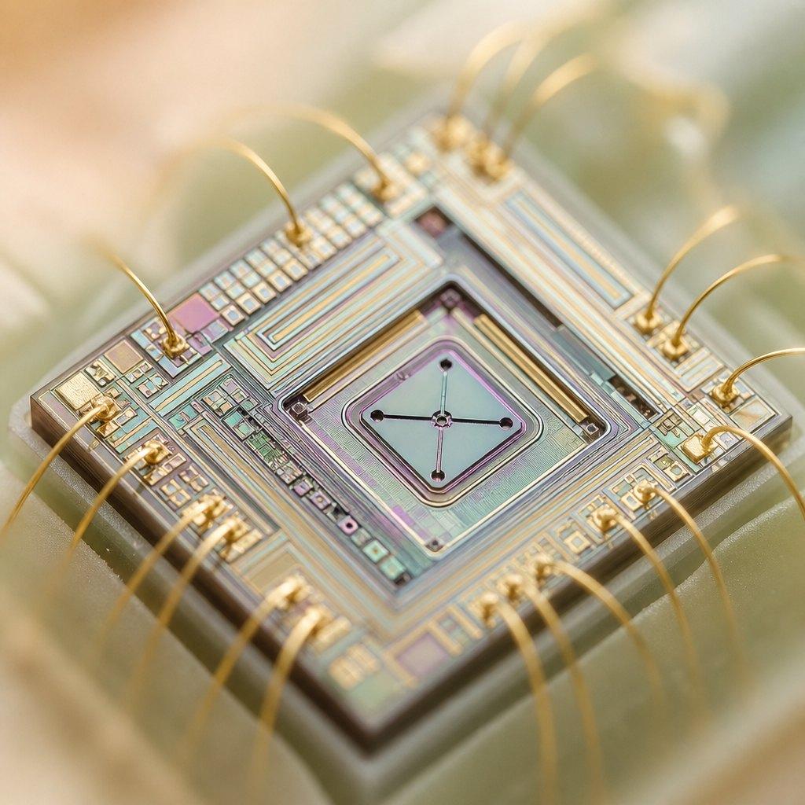
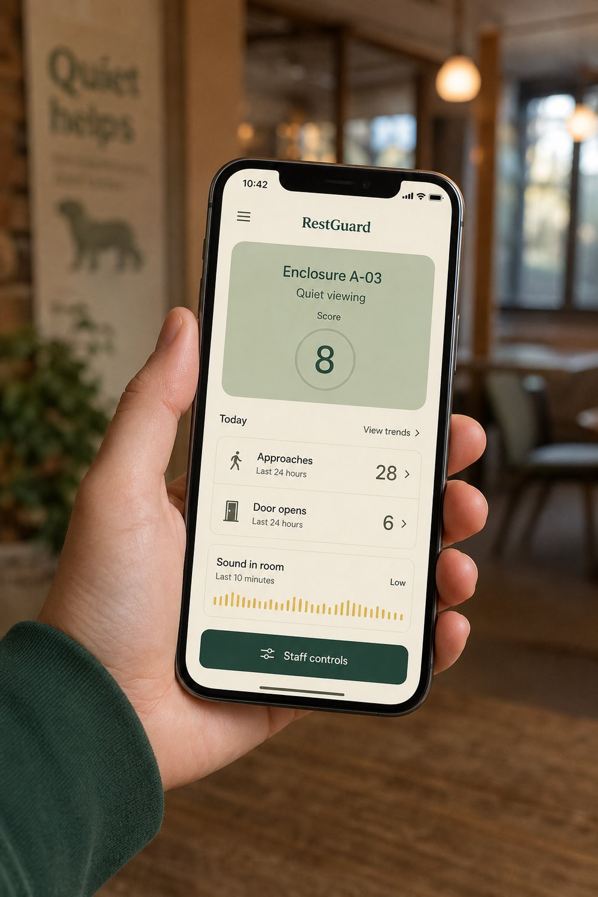

A visitor approaches
Presence at the glass is ordinary. Repeated dwell in the 0.3–1.5 m zone is what the device counts—not people walking past.
Engineering design portfolio · Yulin Zhang · 2026
RestGuard watches the enclosure–visitor boundary—not the animal. Three environmental events become one calm, explainable state. No camera. No emotion reading. No wearable on the pet.


Look inside the chip →The opportunity
A visitor approaches. Another opens the door. Noise continues. Staff can see each moment, but the accumulated pattern across visitors and shifts is hard to hold in mind.
Presence at the glass is ordinary. Repeated dwell in the 0.3–1.5 m zone is what the device counts—not people walking past.
Each opening is a handling event. A magnetic reed switch records the count without entering the enclosure.
Sound is treated as a level, not a recording. Only minutes above a staff-set threshold enter the score.
Design question: how might a small device turn environmental events into clear, humane visitor guidance?
Product concept
Approach + dwell, time-of-flight
Time above threshold, MEMS RMS
Open / close events, reed switch
Colour is always paired with plain language, so the system never depends on colour perception alone.
Quiet viewing — observe calmly.
Please give space — disturbance is accumulating.
Avoid interaction unless staff directs otherwise.
Not a diagnosis. RestGuard reports measurable events and offers guidance. Staff judgment always takes priority.
Dyson-style demo
The same idea as an exploded engineering demo: layers separate so you can understand the enclosure, the light ring, the board, and the mount—without putting anything on the animal.

Wearable science, for the enclosure
Like a multi-sensor wearable, RestGuard’s parts work together and stay mutually explainable. The difference: the “wearable” is on the wall, not on the animal.

MEMS lets mechanical sensing shrink onto a chip. RestGuard uses that density so a 30 mm-deep tile can watch presence and sound without a camera. The board then fuses those signals into one public state—never an opaque “stress” label.
A Class 1 time-of-flight emitter measures distance in a programmable field of view. RestGuard only treats a person as an approach if they enter 0.3–1.5 m and stay long enough. Glass and angle need site calibration; walk-bys should not count.
The digital MEMS microphone is treated as a sound-level sensor. Firmware keeps short-window RMS summaries only. No waveform, no speech, no archive. It is not a certified meter; staff set a relative threshold and compare against a reference during calibration.
A reed switch and magnet count openings with almost no power and no image. Alignment matters. The prototype target is 99 correct events in 100 open/close cycles.
Multi-function coordination
Each sensor is simple. The coordination is the product: a preliminary, adjustable score with hysteresis so the ring does not flicker.
D = 2P + 3O + 0.25A
P qualified approaches · O door-open events · A minutes above the sound threshold
System architecture
Time-of-flight · approach / dwell
Digital MEMS · RMS only
Magnetic reed · open / close
RGB ring + e-paper · green / amber / rest
Recessed button + local web app
Counts and level summaries only

Interaction design
Current enclosure state, transparent event counts, and human override. Summaries—not recordings, not visitor identities, and never a ranking of animals by “stress.”
D = 2P + 3O + 0.25A
Every public colour can be traced back to observable counts.
Validation plan
Scripted approaches at varied angles; walk-bys should stay under 10% false counts.
Open/close fixture test for magnetic alignment.
Timestamp the sensor event and the display change.
Firmware and payload audit: no waveform, image, or identifier.
Five staff complete three tasks without instruction.
External mount, captive fasteners, controlled pull test.
Next evidence, not just next features
Run approaches, door events and sound minutes. Watch D update, hysteresis hold, and staff rest override the ring.